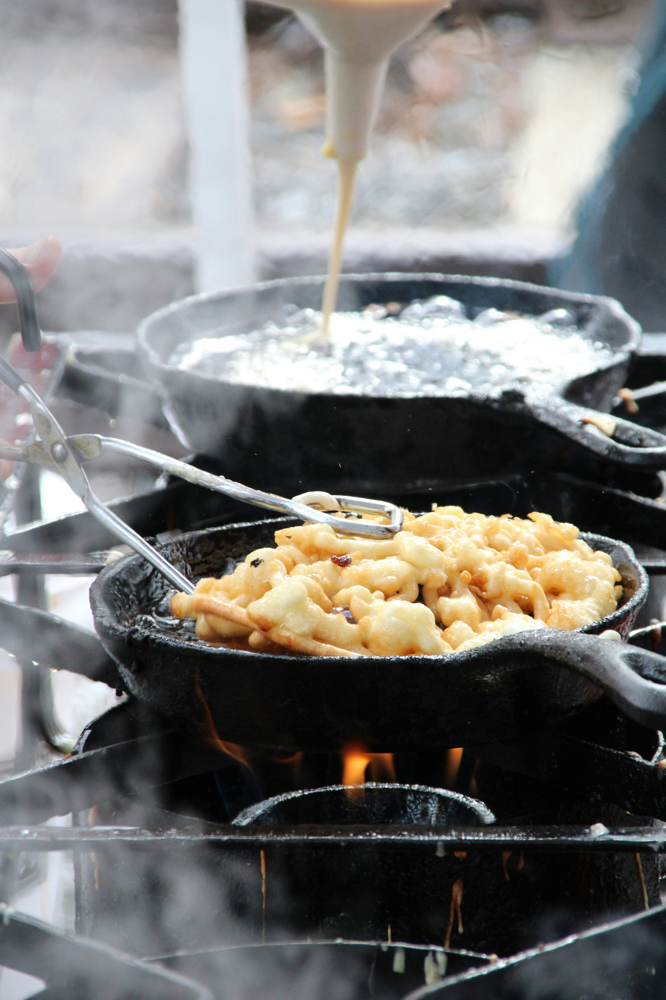

Back to Main Page
Funnel Cake

Description
Funnel cake is a popular fair food that is made by pouring batter through a funnel into hot oil and frying it until golden brown. It is typically served with powdered sugar, fruit, or other toppings.
Ingredients
- 3 2/3 cups all-purpose flour, divided
- 2 teaspoons baking powder
- 1/2 teaspoon salt
- 2 cups milk
- 3 large eggs
- 1/4 cup white sugar
- 1 quart vegetable oil for frying, or as needed
- 2 tablespoons confectioners' sugar, or as needed
Instructions
- Gather all ingredients.
- Mix together 1/2 of the flour, baking powder, and salt in a medium bowl. Set aside.
- Beat Together milk, eggs and sugar in a large bowl. Add flour mixture and beat until smooth. Add remaining flour, using only enough to achieve a runny batter thin enough to flow through a funnel.
- Heat 1 inch oil in an 8-inch skillet to 375 degrees F (190 degrees C). Put your finger over the bottom opening of a funnel and fill with a generous 1/2 cup batter. Release batter close to the surface of hot oil while making a circular motion and fry until the bottom is golden brown, 1 to 2 minutes.
- Use tongs and a wide spatula to carefully turn cake over and fry until the other side is golden brown, about 1 minute more.
- Drain cake on a paper towel-lined plate and sprinkle with confectioners' sugar. Repeat with remaining batter and enjoy!